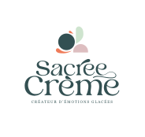

Glaces & sorbets
Des textures onctueuses, des fruits soigneusement sélectionnés et des parfums qui racontent un souvenir.
Trouver ta boutique
Glacier · Coffee shop · Salon de thé
Des glaces artisanales, des crêpes, des gaufres et des boissons gourmandes dans un lieu où tu as envie de rester.
Créateur d’émotions glacées
Sacrée Crème réunit le savoir-faire d’un artisan glacier et l’énergie chaleureuse d’un coffee shop. Un univers lumineux, généreux et authentique, pensé pour chaque saison.
Entre chez Sacrée Crème
Façade, comptoir, matières et détails : avance dans le concept au rythme du scroll. Remonte pour refaire le chemin en sens inverse.
Un lieu aussi doux que nos glaces.
Goûte à tout
Du froid, du chaud, du croustillant. À savourer sur place, en balade ou à partager.
Des textures onctueuses, des fruits soigneusement sélectionnés et des parfums qui racontent un souvenir.
Trouver ta boutiqueCafé, thé, matcha et boissons gourmandes : le réconfort se déguste toute l’année.
Voir le moment chaudMoelleuses, croustillantes, généreuses — et encore meilleures avec une boule de glace.
Découvrir le momentLa saison du réconfort
Nos boissons gourmandes font durer l’expérience Sacrée Crème bien après l’été.
Voir le produit du momentProduit du moment · Projet à valider
Une collection saisonnière généreuse, pensée pour donner envie dès le premier regard. Les recettes et visuels définitifs seront publiés après validation du réseau.
Sélection en cours de validationNos adresses
Découvre le concept à Caen et au Havre, puis suis l’aventure dans les prochaines villes.
Caen
Une façade vivante et un intérieur pensé pour savourer chaque moment.
Le Havre
Une architecture enveloppante, lumineuse et résolument Sacrée Crème.
Entreprendre avec gourmandise
Un concept de glacier–coffee shop distinctif, conçu pour vivre toute l’année et créer un vrai lieu de destination.
Présenter ton projetUne identité forte, un parcours client chaleureux et une mise en scène gourmande.
Glaces, boissons, crêpes, gaufres et temps forts saisonniers.
Un cadre opérationnel et des outils à découvrir pendant le parcours candidat.
Où écrire la suite ?
Les zones présentées ici sont des orientations de développement. Leur ouverture dépendra de l’étude du marché, du local et du projet candidat.
Ton projet commence ici